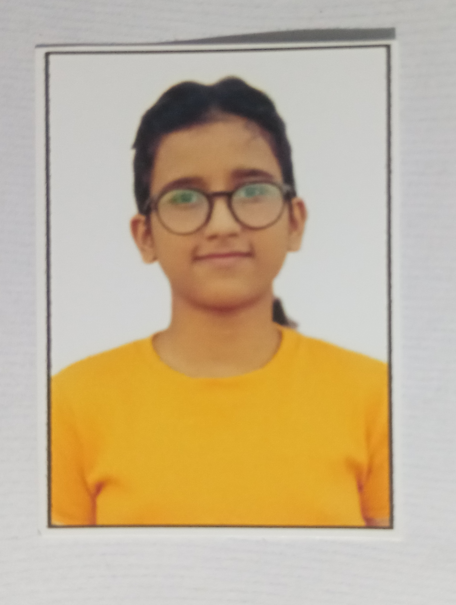
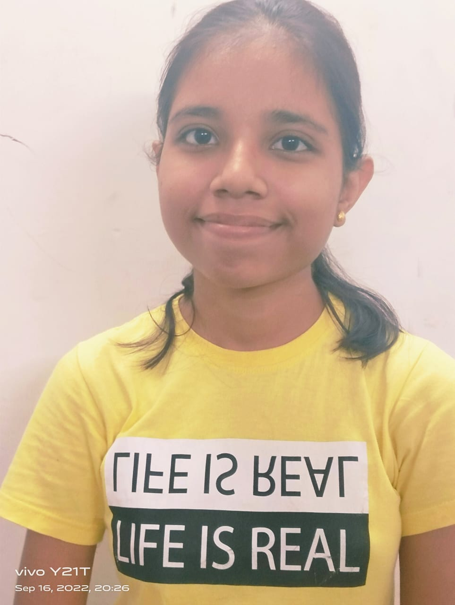
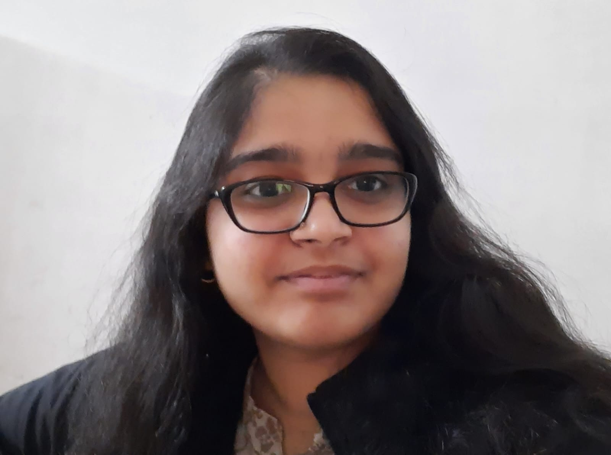
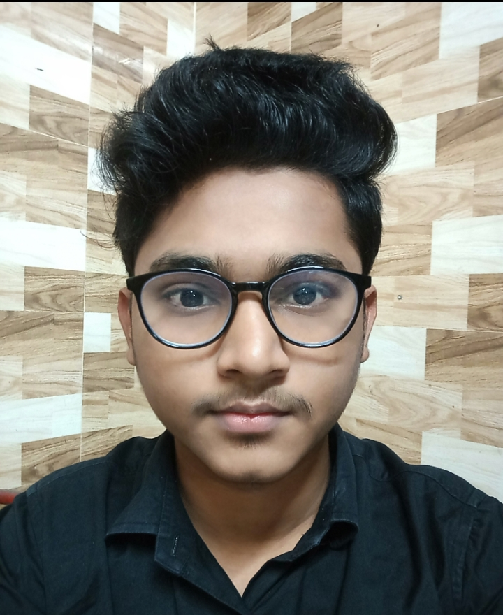
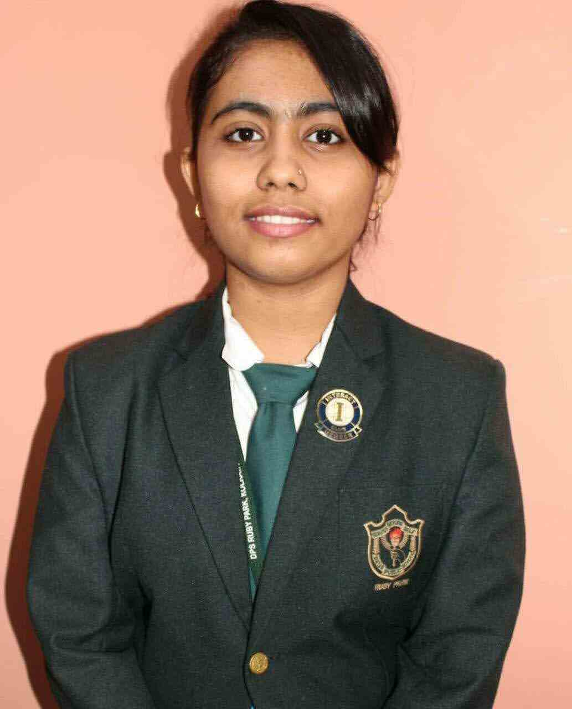
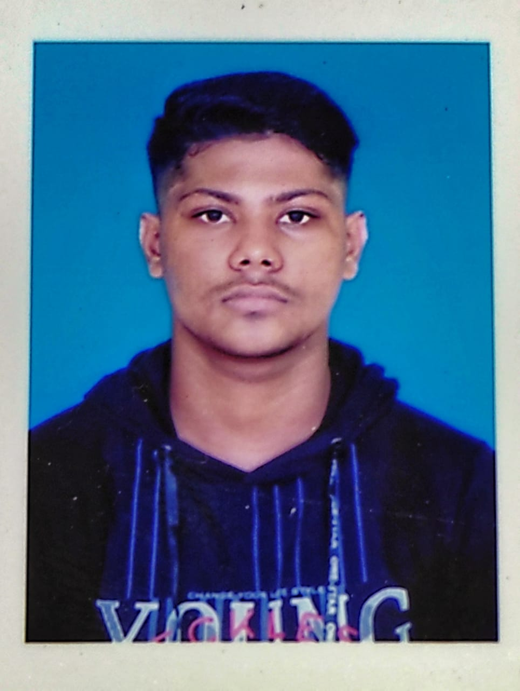

|
Listen! It's not about how good or bad he teach. It's 💯% fact what I'm gonna share with you. I see, Many people teach out of circumstances,greed and passion but *Raghubir bhaiya*is the one who live,love and laugh with students. As a introvert child, I love to observe people.so, I'm wanna share with you some key points of him (what i observed till now 😌). 1.The Aura he carry is tremendous,you will definitely feel once you come to his classroom. 2.His 99 %presence of mind. 3. He look after every students in a same manner, there is no partiality. 4. I personally feel, when he start teaching;some magical vibes forming that you knowingly or unknowingly indulge in it and started love to study. 4.The man who devoted his life for teaching.For him study is worship. (Read it twice) |
Priya Nayak |
|
| College: | Jogomaya Devi College |
| Subject: | Psychology Honours |
| An honour to study here. A perfect place where one can get A+ guidance from an exceptionally beloved mentor ..our very own bhaiya💟 | |
Sruti Gupta |
|
| College: | Heritage Institute of Technology |
| Branch: | Btech in Biotchnology |
|  | The best teacher , mentor, guide , support and what not about him. I feel really really blessed that I could get the opportunity to study from him, also he motivates us to perform well and makes everyone learn what hardwork is, anyday or any moment if we need him he is always there to help us out. He has always been like an elder brother more than a teacher, the support whenever we need, also his guidance helps a lot for our future career. |
Ritika Shaw |
|
| College: | Netaji Subhash Engineering College |
| Branch: | Computer Science Engineering |
|  | Overall the coaching is quite good with all its basic needs (like Wi-Fi, a separate room for self study etc)..which is required for a student to carry it's study easily . Class is also well structured with air conditioner and smart board. Faculties are very cooperative and helpful too. |
Sakshi Singh |
|
| College: | ....... |
| Branch: | ............ |
| Lucky to be the part Raghubhir Shaw coaching classes. Bhayia ka behavior bahut friendly hai. Woh hamara sara problem durr kar dete hai chahe woh syllabus related ho yah future plans ko lekar. Woh humesha ek bade bhayia jaise guide and support karte hai. | |
Dipti Shaw |
|
| College: | ....... |
| Branch: | ............ |
|  | I feel lucky to be a part of RSCC for more than 5 yrs. It has helped me change my perspective towards study and life. Whenever in need I always feel the support from bhaiya. It has always felt like a family instead of a coaching centre |
Sonal Agarwal |
|
| College: | Shivnath Shastri |
| Branch: | Bcom. Honours |
| I have been great experience here and my advice to all juniors is to join this coaching and make their future bright ... And yes u will be taught inside digital classroom . ❤️ | |
Sonu |
|
| College: | ... |
| Branch: | Computer Science Engineering |
| Raghubir sir is not just a teacher but an invaluable mentor. His way of teaching will make you fall in love with the subject. Even the weakest student can turn out to be the strongest in mathematics. I, myself was weak in maths but through "Bhaiya's" explanations, guidance and support i could work up on my potential and achieve excellent results! "Why not give it a shot than sit at home with maths phobia ? " | |
Rajat Kumar Chouhan |
|
| College: | .... |
| Branch: | ...... |
|  | I had joined this coaching in class 8th . from 8th to 12th i learnt from this coaching. When i went to the coaching my basics were not clear in maths, he helped me alot to clear the basics and after few months my basics become very strong. After that in every year I got above 80 in maths .Thank you so much for your guidance and teaching also . |
Suresh |
|
| College: | .... |
| Branch: | ...... |
|  | I have never seen such a dedicated and hardworking mentor…I feel it was my life’s best decision to study under his guidance. Probably the best teacher for maths and science in the town!! |
Tania |
|
| College: | Heritage Institute Of Technology |
| Branch: | CA Intermediate |
|  | I have been great experience here and my advice to all juniors is to join this coaching and make their future bright ... And yes u will be taught inside digital classroom . ❤️ |
Nitesh Sharma |
|
| College: | .... |
| Branch: | CA Intermediate |
 |
At RSCC, an individual finds its right path.Apart from exceptional results our beloved Bhaiya ,creates persons with good morals. |
Raunjt Raj |
|
| College: | MSIT |
| Branch: | CSE(Data Science) |
| College: | MSIT |
| Branch: | CSE(Data Science) |